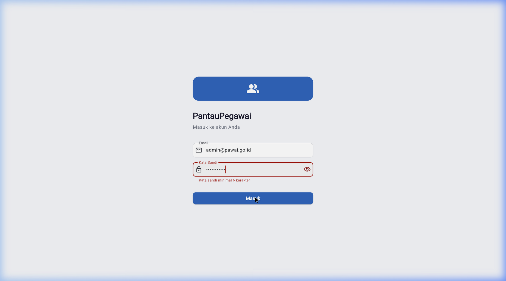
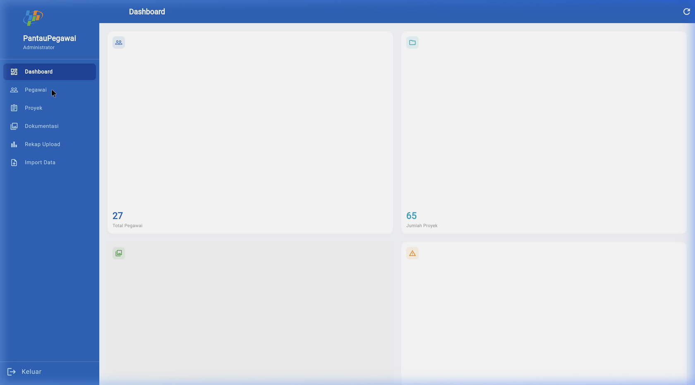
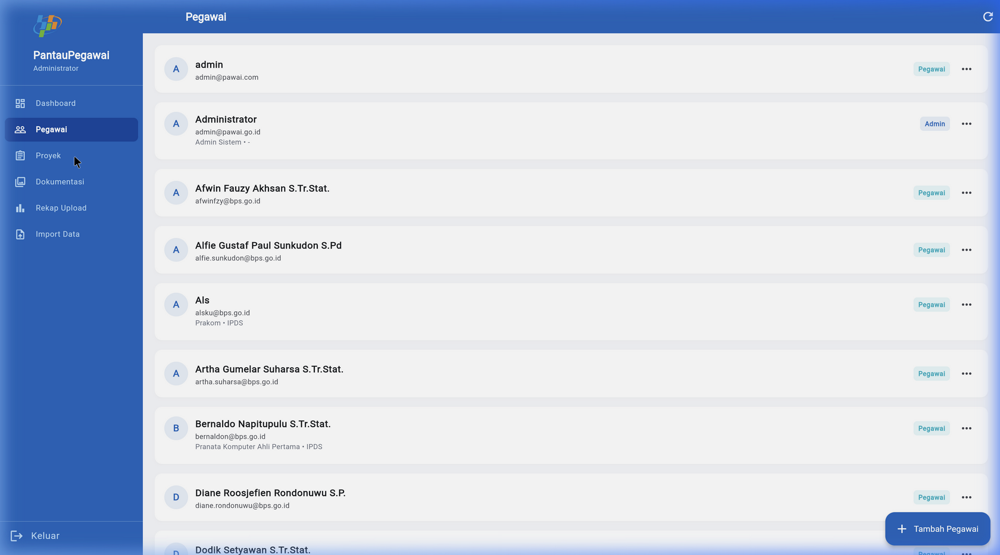
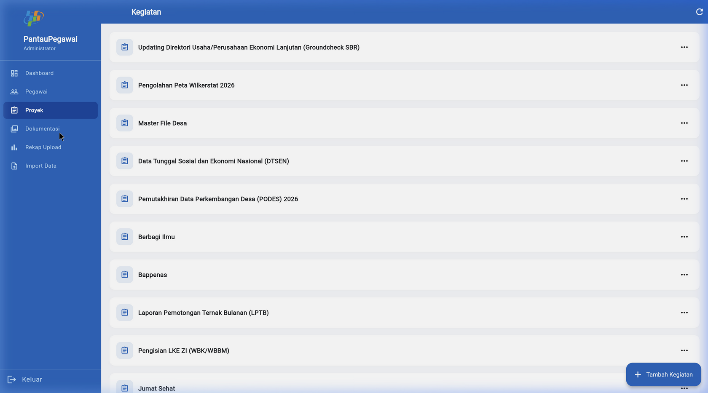
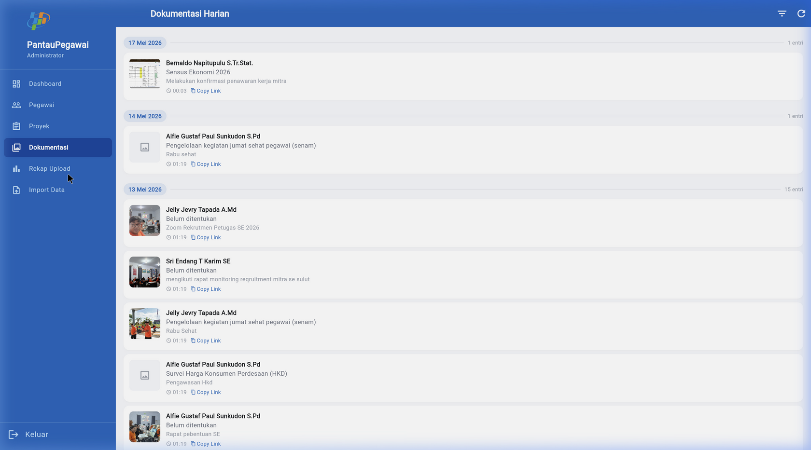
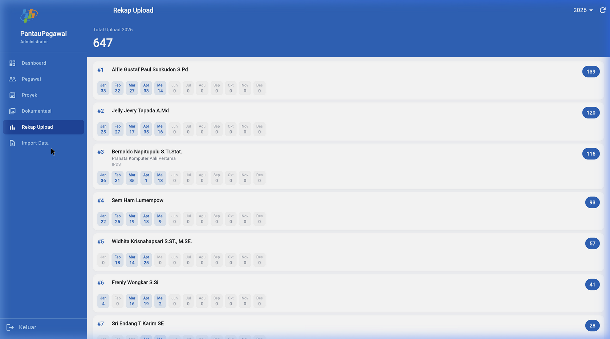
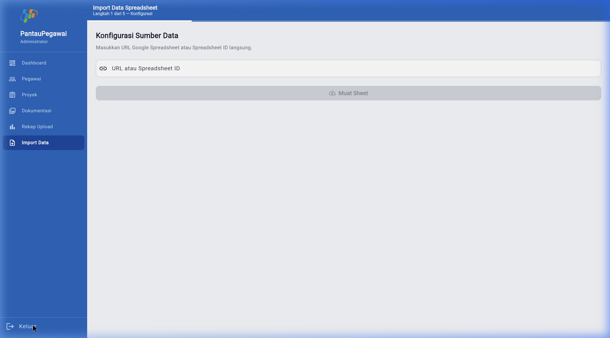

1. Ringkasan Eksekutif
Sistem Pantau Pegawai versi sebelumnya dibangun dengan AppSheet. Pada versi v2, sistem dikembangkan ulang untuk meningkatkan kontrol pengembangan, dukungan multi-platform, dan integrasi yang lebih fleksibel (terutama penyimpanan dokumentasi pekerjaan).
Hasil pengembangan berupa aplikasi Flutter untuk pegawai (Android/iOS) dan dashboard admin (Flutter Web), menggunakan Supabase sebagai autentikasi + database (PostgreSQL dengan Row-Level Security), serta Google Drive sebagai storage berbasis Service Account melalui Supabase Edge Functions.
- Login/logout + role-based routing (pegawai vs admin).
- CRUD pegawai (admin) + reset password (via Edge Functions).
- Dokumentasi harian: input, filter, riwayat, rekap; upload foto ke Google Drive.
- Admin dashboard: manajemen kegiatan, penugasan, laporan, dan rekap upload.
- Solusi CORS & rate limit gambar via
image-proxy.
2. Latar Belakang & Ruang Lingkup
2.1 Latar Belakang
Pengembangan ulang dilakukan untuk meningkatkan fleksibilitas perubahan fitur, pengalaman pengguna yang lebih responsif, serta dukungan multi-device dari satu basis kode. Selain itu, dibutuhkan storage yang mudah, murah, dan terpusat untuk file dokumentasi pekerjaan.
2.2 Tujuan
- Menyediakan aplikasi yang berjalan stabil di Android/iOS serta dashboard admin berbasis web.
- Mengamankan data dengan pembatasan akses per role dan per user (RLS di Supabase).
- Memudahkan proses input dokumentasi (foto/tautan/catatan) dan pencarian/rekap data.
- Mengoptimalkan biaya operasional storage dengan memanfaatkan Google Drive.
2.3 Pengguna & Peran
| Peran | Pengguna | Akses Utama |
|---|---|---|
| Pegawai | Staf/pegawai pelaksana | Input dokumentasi, lihat riwayat, lihat dokumentasi rekan, melihat penugasan/aktivitas. |
| Admin | Pengelola/pimpinan | Kelola pegawai, kegiatan, penugasan, laporan; import data; monitoring rekap. |
2.4 Batasan
- Storage file tidak disimpan di Supabase Storage untuk menekan biaya; menggunakan Google Drive.
- Operasi yang butuh credential sensitif diletakkan di Edge Functions, bukan di client.
- Dokumen ini adalah ringkasan; detail teknis ada pada lampiran dokumen per tahap.
3. Teknologi & Pertimbangan
Pemilihan stack difokuskan pada efisiensi pengembangan, coverage platform, kemudahan operasional, dan pengendalian biaya.
| Layer | Teknologi | Alasan |
|---|---|---|
| Mobile (Pegawai) | Flutter Android/iOS | Single codebase, UI konsisten, performa baik. |
| Web (Admin) | Flutter Web (deploy Vercel) | Reuse UI dan logic, mudah deploy (static site). |
| Auth & Database | Supabase (PostgreSQL + RLS) | Auth siap pakai, RLS kuat, realtime, integrasi Flutter mudah. |
| Upload Proxy | Edge Functions (Deno/TypeScript) | Simpan secret (service role key, private key) aman di server-side. |
| File Storage | Google Drive (Service Account) | Biaya rendah, struktur folder fleksibel, mudah audit & share. |
4. Arsitektur Sistem
Arsitektur memisahkan tanggung jawab antara client (Flutter), backend (Supabase), dan penyimpanan file (Google Drive). Proses upload dan akses gambar melewati Edge Functions untuk menghindari kebocoran secret dan untuk menangani isu CORS/rate limit pada web.
4.1 Diagram Komponen (ringkas)
[Flutter Mobile/Web]
| (Supabase Auth session)
v
[Supabase API: PostgREST + Realtime] <--- RLS policies
|
| (admin/create user, upload file, image proxy)
v
[Supabase Edge Functions (Deno/TS)] --(Service Account JWT)--> [Google Drive API]
4.2 Alur Dokumentasi Harian (upload foto)
- Pengguna mengisi form dokumentasi (proyek, tanggal, catatan, file foto).
- Client memanggil Edge Function
upload-to-drive(multipart upload + metadata). - Edge Function membuat folder Drive dan mengunggah file; mengembalikan URL/id file.
- Client menyimpan record ke tabel
dokumentasi(termasukimage_url). - Untuk tampilkan gambar di web, client menggunakan
image-proxy.
5. Database & Keamanan Data
Database menggunakan PostgreSQL di Supabase. Kontrol akses dilakukan dengan Row Level Security (RLS) untuk memastikan pegawai hanya dapat menulis/mengubah data miliknya, sementara admin dapat melakukan operasi administratif.
5.1 Tabel Utama
- users: profil pegawai (extends
auth.users). - kegiatan: daftar tugas/kegiatan.
- penugasan: relasi pegawai ↔ kegiatan.
- laporan: laporan kegiatan terkait penugasan.
- dokumentasi: dokumentasi harian (fitur utama).
5.2 RLS (ringkas)
| Tabel | Pegawai | Admin |
|---|---|---|
| users | Baca semua profil, update sendiri | Semua operasi |
| kegiatan | Baca | Semua operasi |
| penugasan | Baca milik sendiri | Semua operasi |
| laporan | Baca/tulis milik sendiri | Semua operasi |
| dokumentasi | Baca semua, tulis milik sendiri | Baca + delete semua |
handle_new_user, dan perubahan RLS ada di
docs/02-database-schema.md.
6. Edge Functions & Integrasi Google Drive
Edge Functions digunakan untuk operasi yang membutuhkan service role atau credential sensitif (Google private key). Ini memisahkan secret dari aplikasi client.
6.1 Daftar Edge Functions
| Function | Path | Kegunaan |
|---|---|---|
admin-create-user |
/functions/v1/admin-create-user |
Buat akun pegawai |
admin-delete-user |
/functions/v1/admin-delete-user |
Hapus akun pegawai |
admin-reset-password |
/functions/v1/admin-reset-password |
Reset password pegawai |
upload-to-drive |
/functions/v1/upload-to-drive |
Upload foto ke Google Drive |
image-proxy |
/functions/v1/image-proxy |
Proxy gambar Google Drive (anti-CORS, cache) |
import-from-sheets |
/functions/v1/import-from-sheets |
Import data dari Google Spreadsheet |
6.2 Struktur Folder Google Drive
Folder otomatis dibuat saat upload dokumentasi, mengikuti pola:
/PantauPegawai/{nama_pegawai}/{yyyy-mm-dd}/filename.jpgimage-proxy dengan header
Authorization dan cache 1 hari.
7. Fitur Utama (MVP)
7.1 Autentikasi & Akses
- Login/logout berbasis Supabase Auth.
- Role-based redirect: admin diarahkan ke dashboard admin; pegawai ke area dokumentasi/aktivitas.
- RLS memastikan akses data sesuai role dan pemilik data.
7.2 Pegawai (Admin)
- CRUD data pegawai.
- Reset password dan hapus user melalui Edge Functions.
7.3 Dokumentasi Harian (Pegawai)
- Input dokumentasi: proyek, tanggal, catatan, link opsional, dan foto.
- Riwayat + filter (tanggal/proyek/pegawai) dan rekap upload.
- Tampilan gambar kompatibel mobile dan web melalui
DriveImage+image-proxy.
7.4 Admin Dashboard
- Manajemen kegiatan dan penugasan.
- Laporan kegiatan dan rekap dokumentasi.
- Import data historis dari Spreadsheet (admin-only).
8. Deployment & Operasional
8.1 Menjalankan Lokal (ringkas)
- Flutter Web: jalankan dengan
--dart-defineuntukSUPABASE_URL,SUPABASE_ANON_KEY, danGOOGLE_SHEETS_API_KEY. - Generate code Riverpod: gunakan
build_runner. - Deploy Edge Functions via Supabase Dashboard atau CLI.
flutter pub get
flutter pub run build_runner build --delete-conflicting-outputs8.2 Deploy Web (Vercel)
- Output build berupa static files (
build/web). - Konfigurasi deploy otomatis via
vercel.jsondanbuild.sh. - Environment variables diset di Vercel Settings.
8.3 Build Mobile
- Android: build APK release.
- iOS: build release dan distribusi via Xcode (memerlukan Apple Developer Account).
9. Strategi Pengujian
- Uji fungsional: validasi setiap flow utama (login, CRUD, upload, filter, import).
- Uji integrasi: verifikasi komunikasi Flutter ↔ Supabase ↔ Edge Fn ↔ Drive.
- Uji responsif: layout pada berbagai ukuran layar (mobile vs desktop web).
- Uji keamanan: validasi RLS dan pembatasan endpoint admin-only.
10. Kendala, Risiko, Mitigasi
10.1 Kendala Teknis yang Ditemui
- CORS di Flutter Web saat menampilkan gambar Google Drive.
- Rate limit saat memuat banyak gambar sekaligus dari domain Google tertentu.
- Credential management (private key, service role key) harus aman dan tidak bocor ke client.
10.2 Mitigasi yang Diterapkan
- Gunakan
image-proxyuntuk fetch gambar via server-side, lengkap dengan cache. - Gunakan Service Account JWT (bukan OAuth refresh token) untuk menghindari token expired.
- Letakkan seluruh secret di Supabase Edge Function secrets dan Vercel env vars.
- Gunakan RLS di semua tabel utama dan helper
is_admin().
11. Rencana Pengembangan Lanjutan
- Audit trail yang lebih lengkap (aksi admin, perubahan data penting).
- Export laporan (PDF/Excel) dengan template resmi.
- Notifikasi (push/email) untuk deadline kegiatan dan status penugasan.
- Optimasi performa list (pagination, caching query, prefetch gambar).
- Peningkatan observability: logging terstruktur untuk Edge Functions.
12. Lampiran & Referensi
Dokumen pendukung di folder docs/:
- 00-overview.md — ringkasan stack & daftar dokumen.
- 02-database-schema.md — schema, RLS, trigger, migration.
- 03-supabase-setup.md — konfigurasi Supabase.
- 04-edge-functions.md — daftar & detail Edge Functions.
- 07-fitur-dokumentasi.md — detail fitur dokumentasi harian.
- 09-troubleshooting.md — isu & solusi teknis.
- 10-cara-menjalankan.md — cara menjalankan & deploy.
- dokumentasi-teknis.html — dokumentasi teknis terstruktur.
- erd-database.html — ERD database.
- usecase-diagram.html — Use Case Diagram (Pegawai vs Admin).
12.1 Screenshot (contoh tampilan)
Screenshot disimpan di folder docs/screenshots/ untuk mempermudah review UI/UX.






